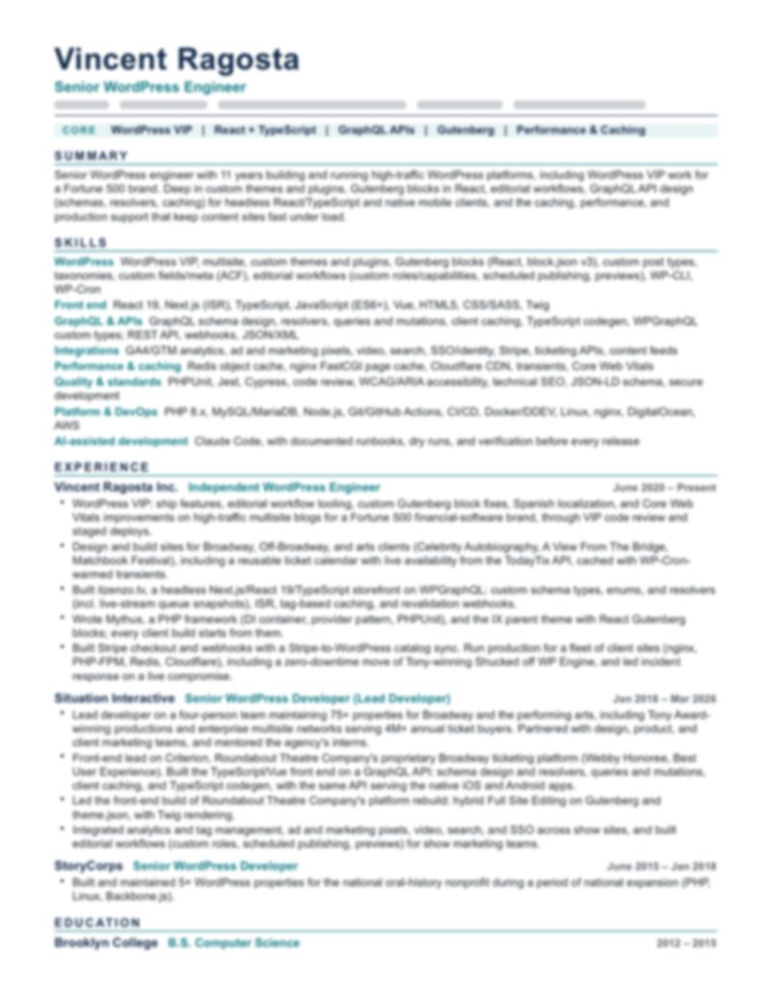

I believe the best digital work comes from understanding the full picture — not just the design or the code, but the business problem behind both. Every project I take on starts with listening: what's the goal, who's it for, and what does success look like?
I write code that's meant to last. That means strict types, automated testing, semantic markup, and accessibility built in from the start — not bolted on at the end. I care about performance, maintainability, and giving the next developer (or future me) something clear to work with.
I move comfortably between frontend and backend, from React editor components to PHP architecture to CI pipelines.
Predictable patterns reduce onboarding friction and cognitive overhead. If the structure is obvious, the code explains itself.
I'd rather ship something focused and refine it than chase perfection in isolation.
Deliberately, with clear boundaries — the same way I'd integrate any powerful tool.
AI is exceptional at accelerating research, generating boilerplate, stress-testing ideas, and catching blind spots in code review. I use it daily.
But I don't hand over architectural decisions. AI works best when the developer driving it knows what good output looks like — and knows when to override it. The judgment, the context, the taste — that's still the human's job.
“I don't ship code I don't understand.”
# 1. draft fast $ claude "add a next-project query by year" ✓ draft ready · 3 files changed # 2. prove it $ make test ✓ phpunit ✓ vitest ✓ playwright + axe # 3. read every line before it ships $ git diff --stat reviewed · understood · committed
Drafting implementations, catching edge cases, and pair-programming through complex logic.
Surveying approaches, evaluating trade-offs, and prototyping ideas before committing to a direction.
Test scaffolds, clear documentation, and consistency across a growing codebase.
Every AI-assisted output is reviewed, tested, and understood before it ships.
A decade of building for the web means picking up a wide range of tools — and knowing when to reach for each one.
With documented runbooks, dry runs, and verification before every release.
Hired straight out of college in 2015. A decade later: an independent practice with real ownership over long-running projects.
WordPress VIP work for a Fortune 500 financial-software brand, Broadway and arts sites with live ticketing, a headless Next.js storefront on WPGraphQL — and Mythus + IX, the framework every client build starts from.
currentLead developer on a four-person team maintaining 75+ properties for Broadway and the performing arts. Front-end lead on Criterion, Roundabout Theatre Company's ticketing platform — on a GraphQL API that also serves its native apps.
Webby HonoreeBuilt and maintained 5+ WordPress properties for the national oral-history nonprofit during a period of national expansion.
NonprofitBrooklyn, NY.
EducationExperience, skills, and education on one page. Updated October 2026.

Looking for a senior-level technical partner, not just a pair of hands? Tell me what you're building.